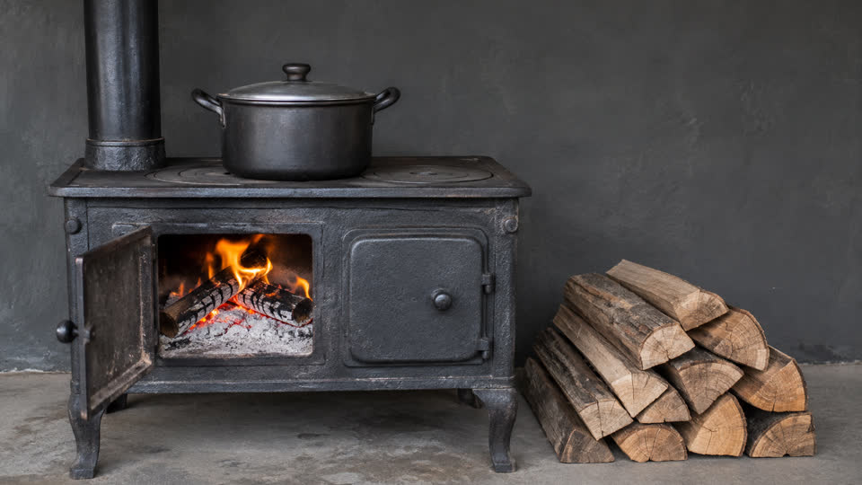
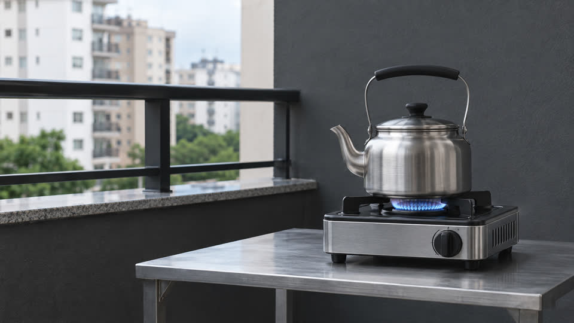
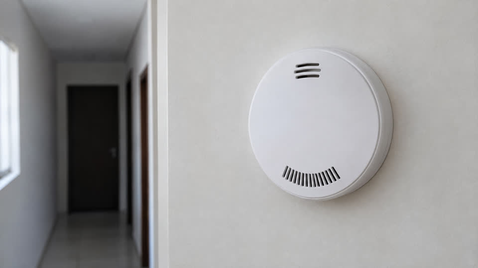

Durante las primeras 72 horas no se cocina: la familia come lo que ya estê¡ listo. Asê ahorra gas y agua y evita el mayor riesgo de improvisar una llama en casa: el incendio y el monê³xido de carbono (un gas sin olor ni color que mata). Si pasan mê¡s de 3 dêÂas, el plan depende de dê³nde vivas y de tu cocina.

ê°Å¸Â¥Â« 72 horas: sin cocinar
Primero, lo que se echa a perder: el refrigerador cerrado mantiene el frêÂo durante unas 4 horas; el congelador lleno, unas 48 horas (medio lleno, 24). Despuê©s, la despensa: comida enlatada lista para comer (atêºn, sardinas, salchichas, frijoles y garbanzos listos, maêÂz), pan de molde, galletas, mantequilla de manêÂ, frutos secos, frutas y frutas deshidratadas, leche larga vida o en polvo, avena con leche frêÂa, barras de cereal. Abrelatas manual y platos descartables para ahorrar el agua de lavar.

ê°Å¸âÂ¥ Mê¡s de 3 dêÂas: los trucos
Las reservas de arroz, pasta y frijoles necesitan fuego y agua extra para cocinarse (los 2 litros por dêÂa son solo para beber). Prefiere lo que se cocina rê¡pido (pasta fina, arroz parbolizado, cuscêºs, avena) y frijoles enlatados. Mantê©n siempre la olla tapada. Calor retenido: deja que hierva de verdad (arroz y pasta unos 5 minutos; frijoles remojados, al menos 10 minutos de hervor fuerte, porque los frijoles crudos hacen daê±o), apaga el fuego, tapa la olla y envuê©lvela en una manta; terminarê¡ de cocinarse con mucho menos gas. Un termo con agua hervida por la maê±ana sirve para todo el dêÂa.

ê°Å¸Â Casa con cocina a gas
El gas no depende de la electricidad, pero el encendido elê©ctrico no funciona: ten fê³sforos o un encendedor en el kit y haz la prueba hoy, con la cocina desenchufada. El horno de algunas cocinas puede no funcionar sin electricidad; cuenta con las hornillas. Un cilindro de 13 kg dura de 3 semanas a 2 meses para una familia de 4: anota cuê¡ndo lo cambiaste y cê¡mbialo antes de que se acabe. En la mayorêÂa de los casos, el gas por tuberêÂa sigue llegando aunque no haya luz.

ê°Å¸Å³ Campo o casa con patio: leê±a
Una cocina a leê±a con chimenea es el mejor plan para varias semanas. Si no tienes una, usa un fogê³n de tres o cuatro ladrillos al aire libre, lejos de la casa, de la maleza seca y de los niê±os. Guarda leê±a seca, cortada y cubierta, lejos de la pared, con ramitas para encenderla: la leê±a verde produce humo y poco calor. Durante la estaciê³n seca, respeta la prohibiciê³n de quemas y deja un balde de agua al lado. En dêÂas de sol fuerte, una cocina solar permite cocinar sin humo.

ê°Å¸Â¢ Apartamento
Nada de leê±a, carbê³n, parrilla ni fogata dentro del apartamento, en la balcê³n ni en la terraza. El cilindro de gas estê¡ prohibido en muchos edificios (en Sê£o Paulo y RêÂo de Janeiro, en los que tienen gas por tuberêÂa): consulta el reglamento del tuyo y no guardes cilindros de repuesto en casa. Gas por tuberêÂa: haz la prueba del fê³sforo (durante una inundaciê³n, el edificio puede cerrar el suministro de gas). Una cocina elê©ctrica o de inducciê³n no funciona sin luz; tu plan es cambiar buena parte de las reservas para 14 dêÂas por comida lista para comer y tener una cocinilla portê¡til de cartucho, para usar solo en un balcê³n abierto, si el edificio lo permite (cada cartucho dura de 1 a 2 horas con la llama encendida; un balcê³n cerrado con ventanas de vidrio no cuenta). Es la êºnica excepciê³n, porque la llama es pequeê±a, se enciende y se apaga de inmediato y no quedan brasas. Si el edificio no lo permite, el plan es comer solo alimentos listos para consumir y conseguir agua caliente con un vecino que tenga gas. Ponte de acuerdo con los vecinos: quien tenga gas calienta agua para quienes no.

ê¢Å¡Â ê¯Â¸Â Nunca, en ninguna casa
Parrilla, cocinilla a carbê³n, brasero o generador dentro de casa, en un garaje cerrado o cerca de una ventana; tampoco enciendas la cocina o el horno para calentar. Si varias personas tienen dolor de cabeza, nê¡useas y mareos al mismo tiempo, salgan al aire libre y llamen al 193. Si huele a gas: abre las ventanas, cierra la llave de paso, no toques ningêºn interruptor, sal y llama al 193. La cocinilla de cartucho tambiê©n emite monê³xido: êºsala solo al aire libre o en un balcê³n abierto, nunca en un espacio cerrado. Un detector de monê³xido de carbono a pilas es barato y protege a la familia.